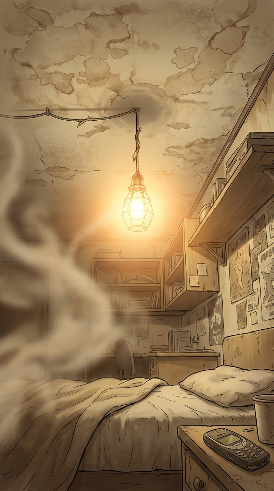
我的头像被卡车碾过一样。
最后的记忆是2026年3月28日凌晨三点半，公司服务器集群全面宕机，我在机房里改了一夜代码……然后就是一片空白。
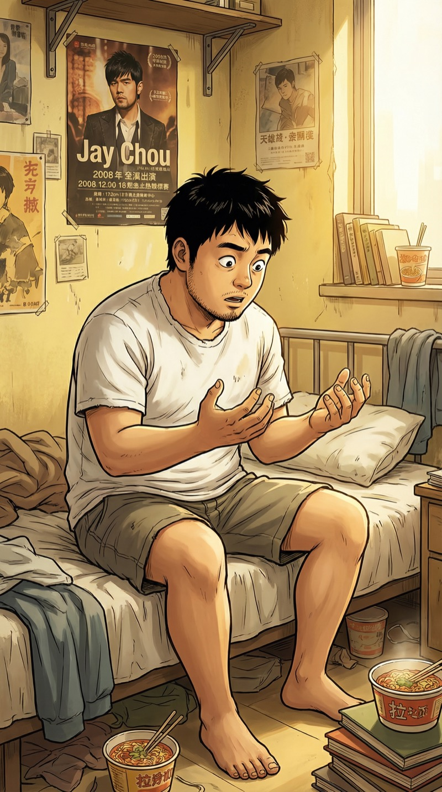
这双手……年轻了。没有去年搬服务器磨出的茧。指甲干净得不像话。
我猛地坐起来——墙上的日历写着：2008年9月12日。
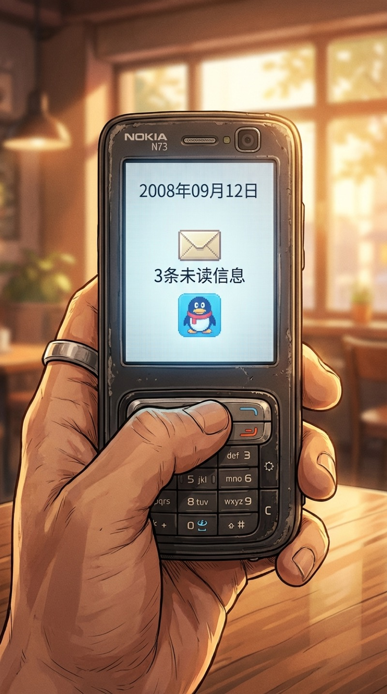
诺基亚。N73。这台手机我大四买的，后来摔碎过三次都舍不得扔。
屏幕上的日期像一把锤子敲在我太阳穴——2008年9月12日。雷曼兄弟还有三天倒闭。
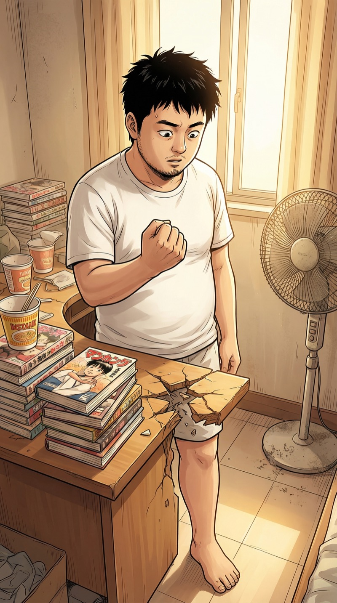
我想拍一下桌子让自己清醒。
然后桌角就没了。
好消息：我重生了。
坏消息：我好像重生成了什么不太正常的东西。
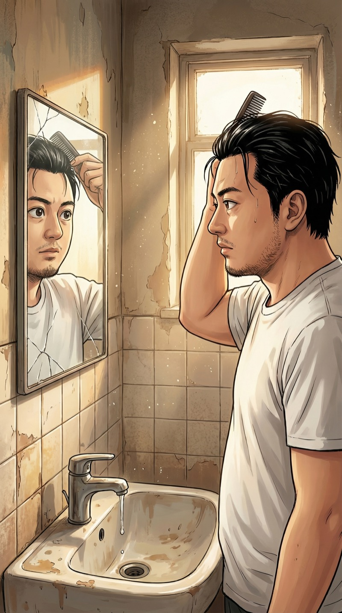
镜子里的人二十五岁。十八年前的我。
不对——对我来说这是十八年后的事。现在是"原点"。而我知道接下来每一年会发生什么。
十八年的商业记忆像ZIP文件一样在我脑子里解压。
移动互联网、O2O大战、共享经济泡沫、短视频崛起、AI大模型……
我知道每一个风口什么时候来、什么时候走、谁赢谁死。
问题是——我要怎么用？
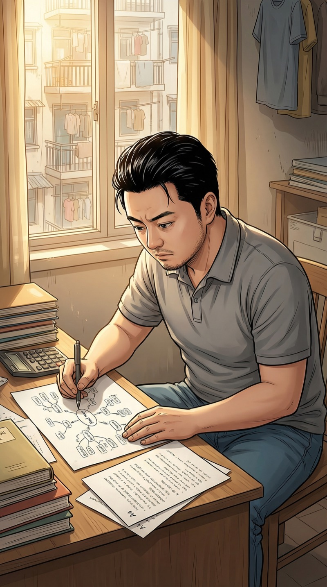
我有两条路。
一，直接用未来知识赚快钱——炒股、买房、买比特币。本金小但能滚雪球。安全，但慢，而且……无聊。
二，直接切入移动互联网创业。现在iPhone才上市一年，安卓刚发布，整个中国移动互联网还是一片荒地。我知道这片荒地三年后值万亿。
选择：直接创业。
上辈子好不容易活成了创业者，重生了反而去当股民？"无聊"是对我最大的惩罚。
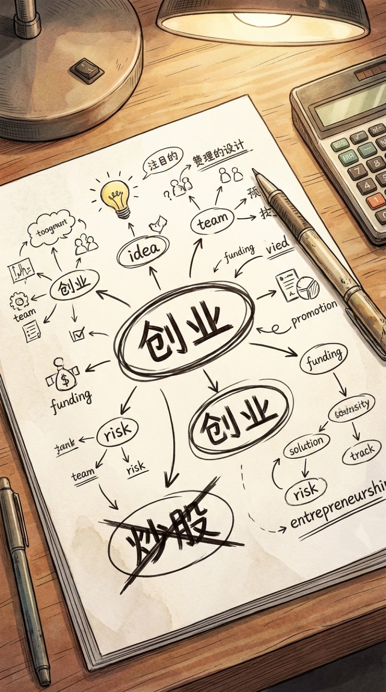
我把"炒股"划掉了。
创业，移动互联网。现在入场，我是第一批。
但我需要钱、需要人、需要一个……理由。一个不暴露我"来自未来"的理由。
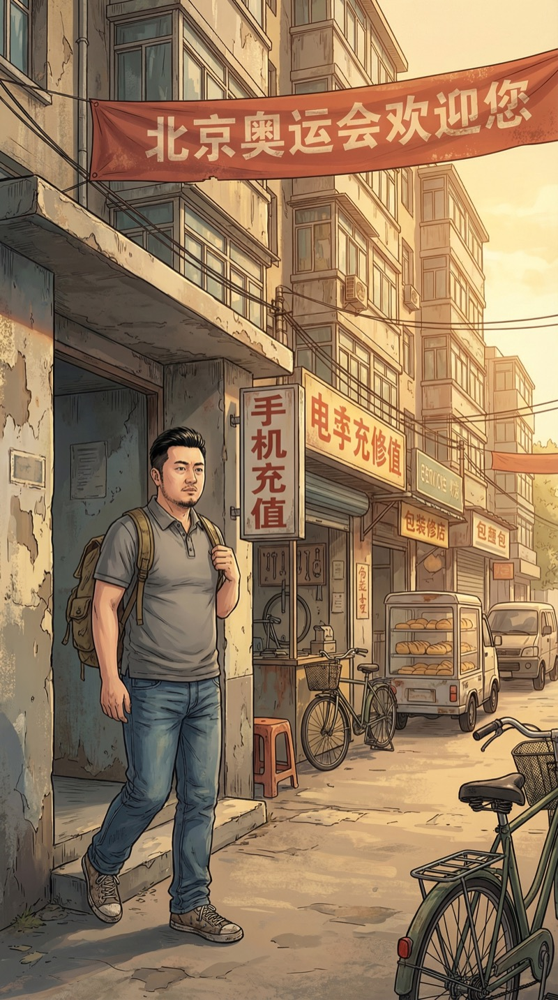
空气里有种2026年闻不到的味道——煤球、油条、和一种莫名的乐观。
2008年的中国，GDP增速还在两位数。所有人都觉得明天会更好。
他们不知道三天后雷曼兄弟会倒。
但我知道。
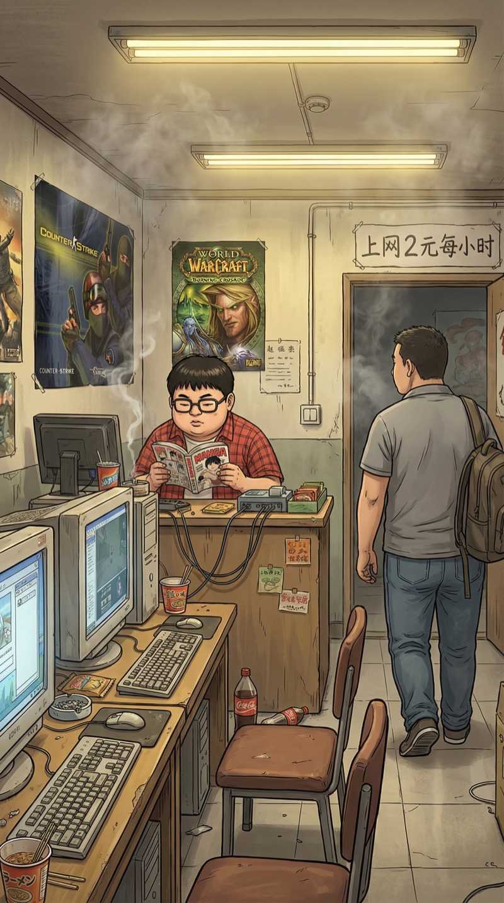
振华的网吧还在！这间网吧2010年拆迁了，他拿到一笔补偿款全买了房——后来证明这是他这辈子最英明的投资决策。
"哥！你不是说今天去投资公司碰运气吗？怎么先来我这儿？"
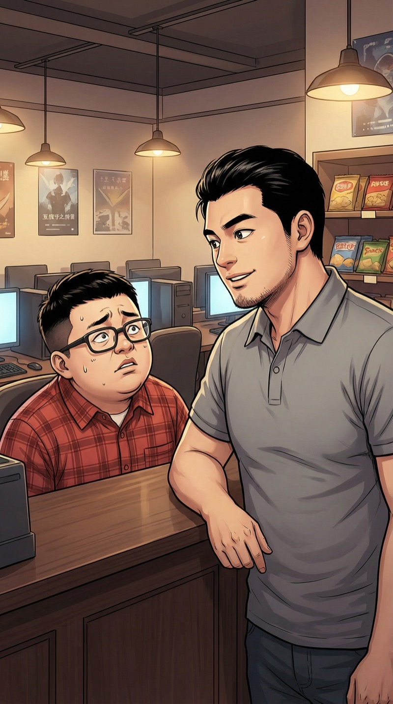
"先来你这蹭个网。"
我拉过一把椅子坐下。
"振华，你觉得手机以后能上网吗？"
"能啊，我那诺基亚就能上QQ。"
"不是那种，我是说——手机变成电脑，所有人拿手机买东西、看视频、叫外卖、打车。"
振华看我的眼神像在看一个刚从精神病院翻墙出来的人。
"叫外卖？你打个电话不就行了？"
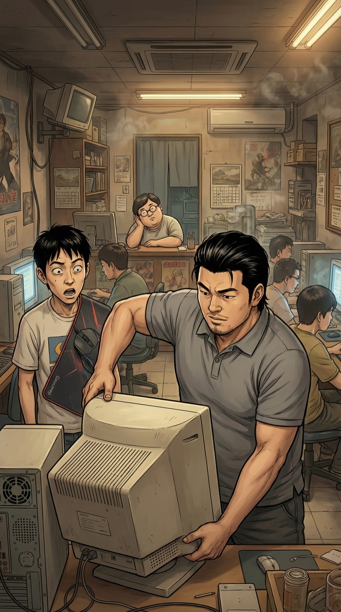
有人喊换机器，我顺手帮忙搬了下显示器。21寸CRT，大概二十多公斤。搬完才意识到——我用的是一只手。
记住。控制力量。你不是金刚，你是一个2008年的普通大学毕业生。不要引起注意。
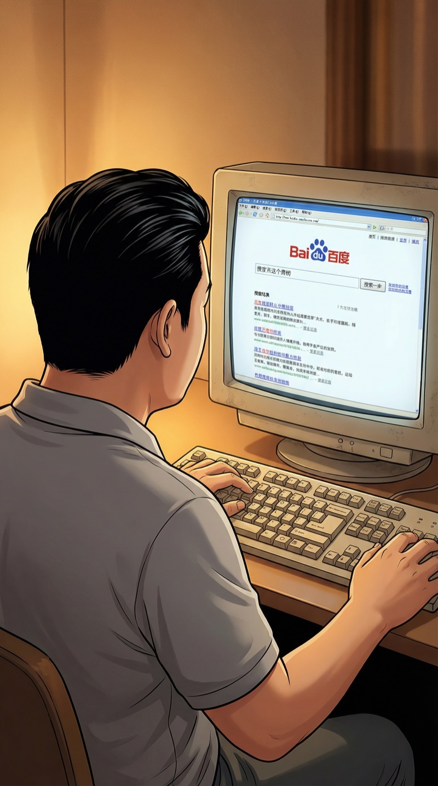
百度搜"移动互联网创业"——结果不到两页。2008年，这四个字还不是风口，而是笑话。
完美。蓝海中的蓝海。
我打开一个记事本，开始写商业计划书。iPhone App Store刚上线两个月，中国区app不到一千个。
我需要做的第一件事——找到一个2008年能理解"移动互联网"的投资人。
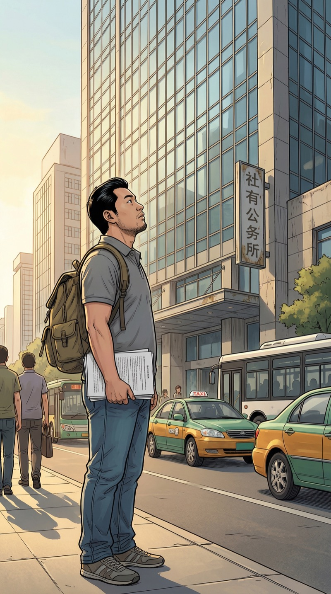
下午两点，浦东一家创投公司。
我上辈子第一次创业就是在这里被拒的。那次我准备了三个月，对着镜子练了五十遍路演，最后被一句"看不懂"打发了。
这次——我准备了十八年。
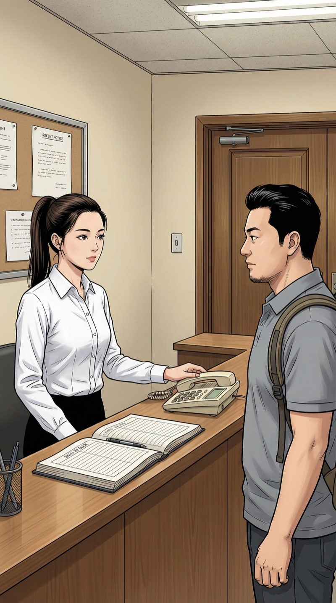
"你好，我约了马总下午的时间。"
"哦你就是那个……移动互联网？"
她翻了翻登记本，嘴角有一丝不易察觉的笑——不是嘲讽，更像是好奇。
"马总在开会，你先等一下。"
周薇。她后来是这家基金最年轻的合伙人。现在还在当前台。
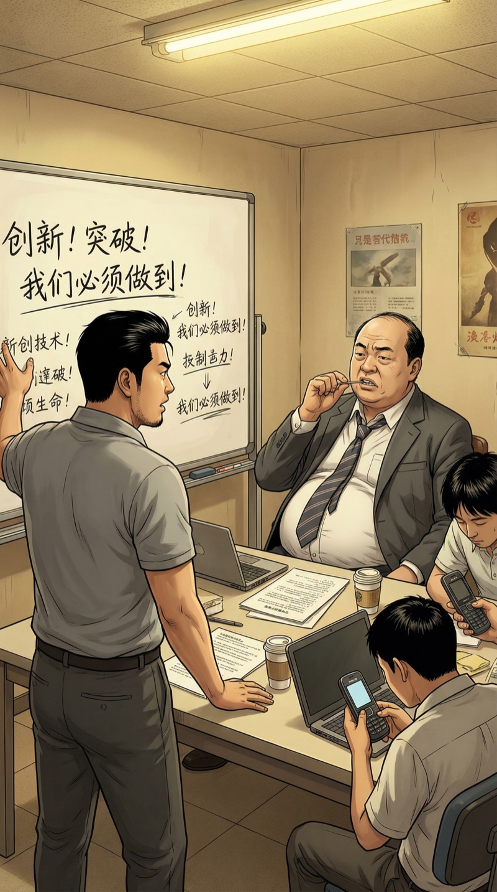
"马总，三年之内，智能手机会替代电脑成为最大的互联网入口。中国会有十亿人用手机上网、购物、社交——"
马总打了个哈欠。
"小朱啊，你知道现在诺基亚市场占有率多少吗？四成。谁会花五千块买一台不能换电池的手机？"
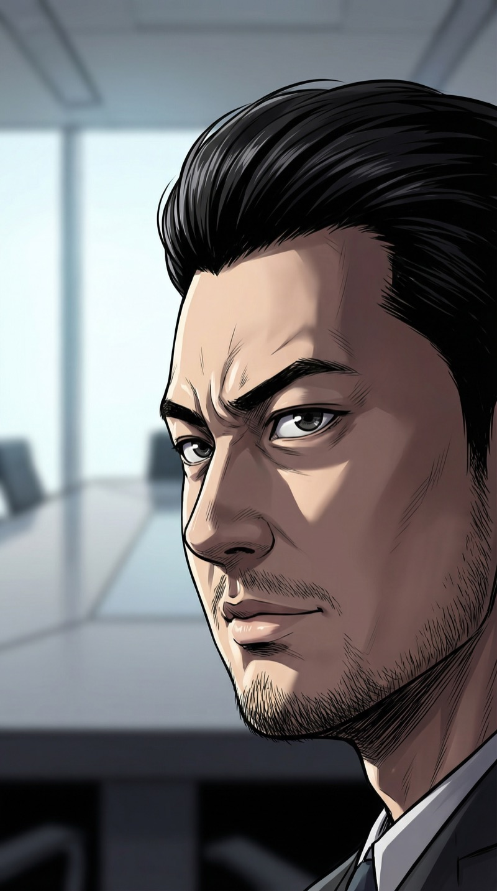
我有两个选择。
一，客客气气离开，换下一家。上辈子我就是这么做的——客气、谦卑、被拒绝一百次。
二，亮底牌。不是暴露未来的底牌，而是用一个马总无法忽视的预言——三天后雷曼兄弟倒闭——来证明我的判断力。
选择：亮底牌。
上辈子客气谦卑被拒了一百次。这一次——用预言说话。黑客式反击。
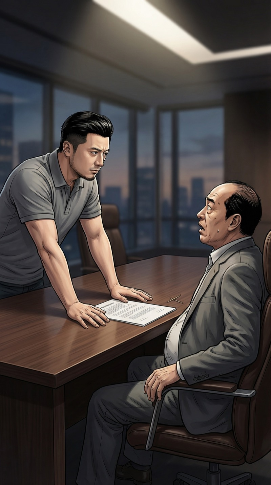
"马总，"
我站起来，把商业计划书推到他面前。
"我跟您做个赌注。今天是9月12号。三天之内，美国第四大投行雷曼兄弟会宣布破产。全球金融市场会崩盘。A股会跌破两千点。"
会议室突然安静了。马总的牙签掉在桌上。
"如果我说错了，我以后再也不来烦您。如果我说对了——您给我半小时，认真听我讲完。"
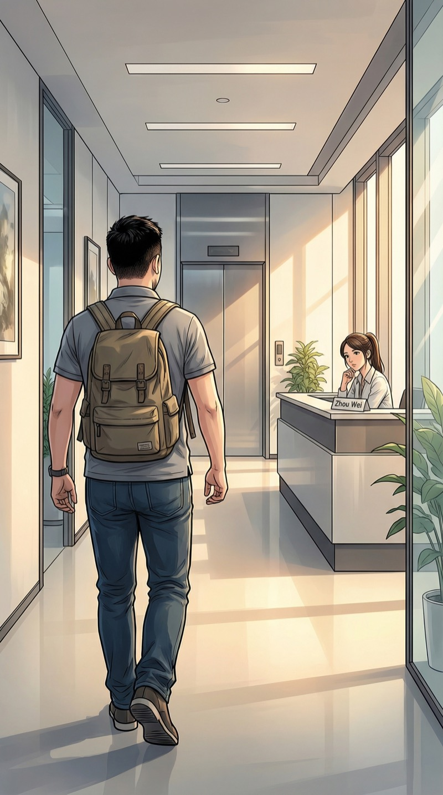
我走出会议室的时候，听到马总在背后嘟囔了一句：
"又一个疯子。"
我笑了。
上辈子有人这么说过马云。也有人这么说过乔布斯。
被叫疯子——是创业者的入门礼。
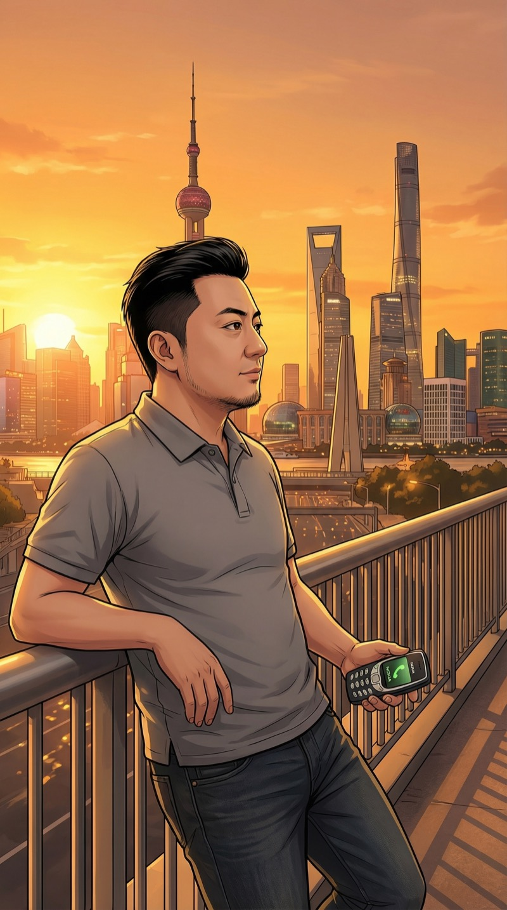
手机响了。一个陌生号码。
"你好，是朱江先生吗？我是刚才公司前台的周薇。马总让我告诉你——不必等三天了。他说今晚美股开盘就知道了。如果你说的是真的……明天上午九点，他清空整个日程等你。"
我挂了电话，看着浦东的天际线。
2008年的上海中心还没开工。但我知道它会建到632米。
就像我知道——这只是开始。